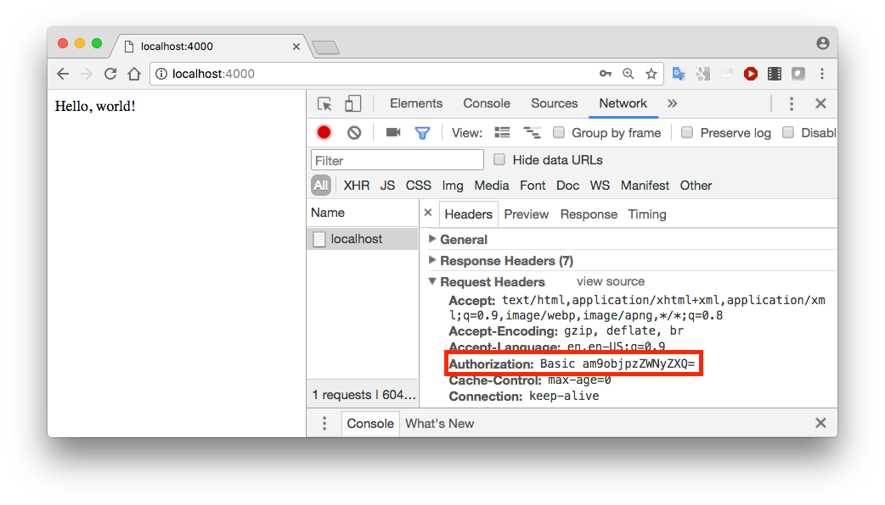

Objectives
In this lab, we will walk through some examples in class of how to add various authentication-related features to a web application. You may adapt these for the purposes of your web application security assignment report. In particular we will examine:
- Password hashing & salting
- HTTP Basic authentication
- Using OAuth
Password hashing & salting
The bcrypt module provides password hashing and salting.
When registering a new user or changing password, convert the supplied password to a hashed and salted version with bcrypt.hash
bcrypt.hash(plaintextPassword, saltRounds, function(err, hash) {
// Store hash in your password DB.
});To check a password entered by a user against the stored value, read the stored value (called hash here) and compare with bcrypt.compare
bcrypt.compare(candidatePassword, hash, function(err, res) {
// res is true if password is correct
});This edited version of the accounts.js controller from donation-web-final implements both of these for user registration, password update and authentication.
Note that any database initialisation you have will also need to be updated - see new version of initdata.json. These were populated with values created with an online bcrypt calculator.
The lecture notes contain some background on password hashing and salting.
You can get donation-web-final with the following command:
git clone https://bitbucket.org/edeleastar/donation-web-final.git
Then overwrite app/controllers/accounts.js with the version of accounts.js linked below. Likewise overwrite app/models/initdata.json with the version of initdata.json linked below.
Start mongod in a new terminal
sudo mongod
Then you should be able to run the app and see hashed and salted passwords
cd donation-web-final npm install node index.js
Resources:
HTTP Basic Authentication demo
This code demonstrates HTTP Basic Authentication using the hapi-auth-basic module
Required modules: hapi, bcrypt, hapi-auth-basic
'use strict';
const Hapi = require('hapi');
const server = new Hapi.Server();
server.connection({port:4000});
server.start((err) => {
if (err) {
throw err;
}
console.log(`Server running at: ${server.info.uri}`);
});
const Bcrypt = require('bcrypt');
const users = {
john: {
username: 'john',
password: '$2a$10$iqJSHD.BGr0E2IxQwYgJmeP3NvhPrXAeLSaGCj6IR/XU5QtjVu5Tm', // 'secret'
name: 'John Doe',
id: '2133d32a'
}
};
const validate = function (request, username, password, callback) {
const user = users[username];
if (!user) {
return callback(null, false);
}
Bcrypt.compare(password, user.password, (err, isValid) => {
callback(err, isValid, { id: user.id, name: user.name });
});
};
server.register(require('hapi-auth-basic'), (err) => {
server.auth.strategy('simple', 'basic', { validateFunc: validate });
server.route({
method: 'GET',
path: '/',
config: { auth: 'simple' } ,
handler: function (request, reply) {
reply('Hello, world!');
}
});
});To run this, save this program (basic.js) to a new folder and run:
npm install hapi bcrypt hapi-auth-basic node basic.js
Now open a new browser tab and go to Developer Tools (right click and Inspect in Chrome). Select the Network tab and browse to http://localhost:4000.
Observe that a WWW-Authenticate:Basic Response Header is set.

Entering the correct username and password (john/secret) sets an Authorization header in all requests to that domain until the browser is closed. Note that this the username and password are just encoded and not encrypted.

Try any online Base64 decoder to find what am9objpzZWNyZXQ maps to.
Using OAuth
The short tutorial linked here shows how to use the bell plugin for OAuth - to allow your users to give your application privileged access to aspects of their account on any of a number of services - such as Twitter, Facebook, Google, Microsoft, LinkedIn, etc.
This tutorial is based on getting access to the user's GitHub account. The sample application code provided below is based on this (adapted to Twitter).
This code contains placeholders for a Client ID and Client Secret which can be obtained by registering your app at https://apps.twitter.com/. You also need to specify a callback URL which could for example be http://127.0.0.1/ or http://127.0.0.1/account